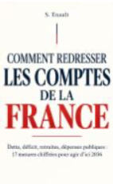

Emmanuel Macron, le bilan
Promesses, réformes, crises et affaires : la présidence passée au crible des faits (2017-2026).
Voir sur AmazonDes dossiers documentés qui distinguent les faits établis, les désaccords, les hypothèses et les zones d'incertitude.
Dossier
Objectif de déficit, effort de 54 milliards, répartition entre dépenses et recettes, avis du Haut Conseil des finances publiques. Données arrêtées au 8 octobre 2026.
Lire le dossier

Affaires & Enquêtes
Fonctionnement et saisine de l'IGPN, séries d'enquêtes depuis 2016, tirs mortels et tirs sur véhicules, suites disciplinaires, signalements des usagers, contrôle externe par le Défenseur des droits, débat sur la loi de 2017 et la présomption de légitime défense, et limites de ces statistiques. Données arrêtées au 8 octobre 2026.
Lire le dossier
Politique
Méthodes, résultats des études du CEPII et de l'OCDE, origine des chiffres contestés et limites des calculs. Données arrêtées au 8 octobre 2026.
Lire le dossier
Politique
Ressources autorisées, remboursement public, réticence des banques et propositions en débat. Données arrêtées au 8 octobre 2026.
Lire le dossier
Affaires & Enquêtes
Procédure expliquée, décisions de justice depuis 1984, annulations, prescription, investigations en cours et ce que l'affaire a changé. Données arrêtées au 8 octobre 2026.
Lire le dossierUne information rigoureuse, claire et sourcée. Nos dossiers distinguent cinq niveaux de lecture pour mieux comprendre les débats publics.
En savoir plusSource : Projet de loi de finances pour 2027, 1er octobre 2026
Des ouvrages de référence pour comprendre en profondeur les grands enjeux français.
Voir toutes les monographiesPromesses, réformes, crises et affaires : la présidence passée au crible des faits (2017-2026).
Voir sur Amazon
Dette, déficit, retraites, dépenses publiques : 17 mesures chiffrées pour agir d'ici 2036. Faits, débats, calculs et propositions séparés.
Voir sur AmazonLes erreurs des premières 48 heures qui ont tout fait échouer. Volume 4 de la collection « Affaires qui ont choqué la France », environ 60 minutes de lecture.
Voir sur AmazonLes nouveaux dossiers, les mises à jour et une sélection de sources documentaires. Sans polémique ni surcharge.
Lancement prochain : l'inscription ouvrira ici.